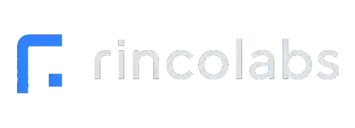

Linux
Available now
Public Beta
Try the Linux beta and help shape Hazor Studio through real editing feedback.
- Native desktop build
- AppImage


An image editor made with care, built to grow one step at a time.
Hazor Studio is a project built with patience, dedication, study, and a lot of careful work. The goal is to create a solid, accessible image editing experience that can keep improving over time. There is still a long road ahead, but each part of the application is being shaped with care to become useful, stable, and pleasant to use.
Early beta builds are available for testing and feedback.
Download
Hazor Studio beta builds are available for Linux and Windows. macOS support is planned for a future release.
Linux
Try the Linux beta and help shape Hazor Studio through real editing feedback.
Windows
Try the Windows beta on Windows 10/11 64-bit systems while the desktop experience continues to improve.
macOS
macOS support is planned for a future release. Today, Hazor Studio can be tested on Linux and Windows.
Active Development
Hazor Studio is currently in active public beta.
Core editing systems are already functional, including layers, masks, brushes, selections, transforms, and AI-assisted workflows.
The project is evolving steadily, and feedback helps guide practical improvements in stability, packaging, and everyday editing workflows.
Features
OpenGL viewport with pan, zoom, document tabs, rulers, guides, and snapping overlays.
Pixel, text, shape, group, and adjustment layers with masks, effects, opacity, visibility, and blend modes.
Configurable brushwork with smoothing, pressure, tilt, velocity, airbrush, textured brushes, and experimental Krita brush import.
Rectangular, elliptical, lasso, magic wand, quick select, magnetic lasso, AI subjects and more.
Brightness, contrast, saturation, hue, blur, sharpen, edge detection and more.
Editable text and vector shape layers
Grayscale, Curves, Color Balance, Hue/Saturation, and Solid Color adjustment workflows.
Chronological history with non-linear state navigation.
Brush Engine
Hazor Studio’s Brush Engine is compatible with Krita, widely regarded by many artists as one of the best drawing applications available today. The goal is to bring a flexible painting experience to the editor, with experimental support for importing Krita brushes, presets, and textures as the system continues to evolve.
Krita brush import is still experimental, so compatibility can vary between presets and should not be treated as perfect.


AI Select Tool
Hazor Studio includes experimental AI selection tools, including subject selection and background removal. The application uses models such as SAM for segmentation and BiRefNet for refinement, aiming to speed up common cutout and selection tasks without promising perfect results.


Upscaling
Hazor Studio includes experimental upscaling support through Real-ESRGAN, using AI models to enlarge images while aiming to preserve visual detail. Availability may depend on the operating system, GPU, drivers, and environment compatibility.


AI Generative Fill
Hazor Studio explores AI Generative Fill with local or remote inpainting, helping extend, replace, or restore parts of an image. It can connect to local Stable Diffusion setups through A1111 Forge and OpenAI-compatible APIs, along with providers such as Google Gemini.


AI Workflow
Hazor Studio includes an internal AI Agent that can translate natural language into structured editing actions inside the editor. It can help with tasks like adjustments, filters, and repeatable edits while keeping the user in control.
The MCP server also allows external agents and automation tools to inspect available commands and control the editor through a structured interface, making Hazor Studio accessible to both built-in and external AI workflows.


Platforms
Hazor Studio is part of Rincolabs' effort to build open source creative software with solid desktop support. The current beta focus includes Linux and Windows, with other platforms considered as the project matures.
Open source development
Windows and Linux beta builds
Sponsor-supported sustainability
Practical creative tools
Long-term maintainability
Roadmap
Hazor Studio is under active development. The current foundation already includes core editing systems, while future work will focus on project files, plugins, AI workflows, packaging, documentation, and release polish.
Sponsor
Sponsorship helps fund development time, testing, documentation, packaging, AI tooling, and long-term maintenance. Supporting Hazor Studio means supporting practical open source creative software.